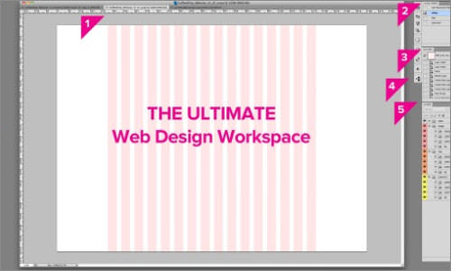
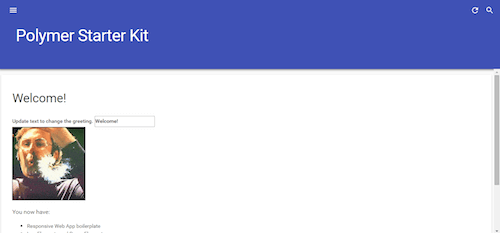

Read Our Blog
Powerful Workflow Tips, Tools And Tricks For Web Designers
Designing and developing can be time-consuming, especially when the project involves a new challenge, putting the team or freelancer into unknown territory. Moreover, time is a key factor in productivity. Working efficiently enables us to deliver better value at a competitive price. However, some steps can be repeated for every project. These are steps we know and should make as quick as possible in order to have more freedom to experiment with new solutions. This article presents a collection of tools, tips and tricks that will make your standard workflow as fast and practical as possible, so that you have more time for the exciting parts of the project. Ready? Here we go!
7 things people hate about your website
When you're browsing the web — whether online shopping or information-gathering — what's the one thing that drives you crazy about the sites you visit? Chances are, it's something that interrupts your user experience.
1. There is too much text
On average, users only read 28% of words on a page — so make them count. Provide text where it's needed, but try to convey additional information in different, more dynamic ways. Outfit your site with pictures and informational videos. These engaging alternatives attract users, and can dramatically boost your conversion rates.2. It takes too long to load
You've heard it a hundred times before: we're living in a society of instant gratification. So when users click on a link, they want it to load — fast. In fact, 40% of visitors will leave your website if it takes longer than 3 seconds to load 40% of visitors will leave your website if it takes longer than 3 seconds to load, which can have a huge impact on your bottom line sales goals.A Responsive Material Design App With Polymer Starter Kit

One upcoming technology that represents a big leap forward in making the web a mature application platform is web components. From a high-level perspective, web components will enable better composability, reusability and interoperability of front-end web application elements by providing a common way to write components in HTML.
The goal of this article is to show you why this will be such an important step, by showing off what can be accomplished right now using Polymer. Polymer is currently the most advanced and (self-proclaimed) production-ready library based on web components.
What Is Polymer? Link
Let’s get this out of the way: “Polymer is not a framework.” The team behind it strongly emphasized this at this year’s Google I/O talk about the 1.0 release. Polymer was announced at Google I/O 2013. Its purpose is to enable developers to work with web components and the four underlying low-level APIs — HTML imports, shadow DOM, HTML templates and custom elements — before the standards are finalized and implemented by all browser vendors.
This is accomplished by providing a set of polyfills that, well, “fake” the new API behavior where it is not yet implemented for the last two versions of all major browsers.
Beyond these polyfills, Polymer also provides some syntactic sugar that makes working with web components a bit easier.
One year later, the project got a big boost at Google I/O 2014, as the team announced its ambitions to drive Polymer forward by providing an extensive library of prebuilt elements for developers, based on the material design guidelines. Now, one year later, the “production-ready” 1.0 version of Polymer was officially announced in the I/O 2015 keynote.
Services
Condimentum mauris sed, bibendum lectus. Duis posuere turpis augue. Interdum et malesuada fames ac ante ipsum primis in faucibus. Curabitur mattis feugiat aliquam. Cras luctus magna tellus. Nullam consequat vitae sem nec luctus
About Us
Donec non est gravida, condimentum mauris sed, bibendum lectus.fames ac ante ipsum primis in faucibus. Curabitur mattis feugiat aliquam. Cras luctus magna tellus. Nullam consequat vitae sem nec luctus
Customer Support
Interdum et malesuada fames ac ante ipsum primis in faucibus. Donec non est gravida, condimentum mauris sed, bibendum lectus. Duis posuere turpis augue. Curabitur mattis feugiat aliquam. Cras luctus magna tellus. Nullam consequat vitae sem nec luctus
Featured Video
Recent Comments
-

"Duis posuere turpis augue. Curabitur mattis feugiat aliquam." - Jessica L.
-

"Duis posuere turpis augue. Curabitur mattis feugiat aliquam." - Amanda G.
-

"Duis posuere turpis augue. Curabitur mattis feugiat aliquam." - James B.
-
"Duis posuere turpis augue. Curabitur mattis feugiat aliquam." - Robert L.